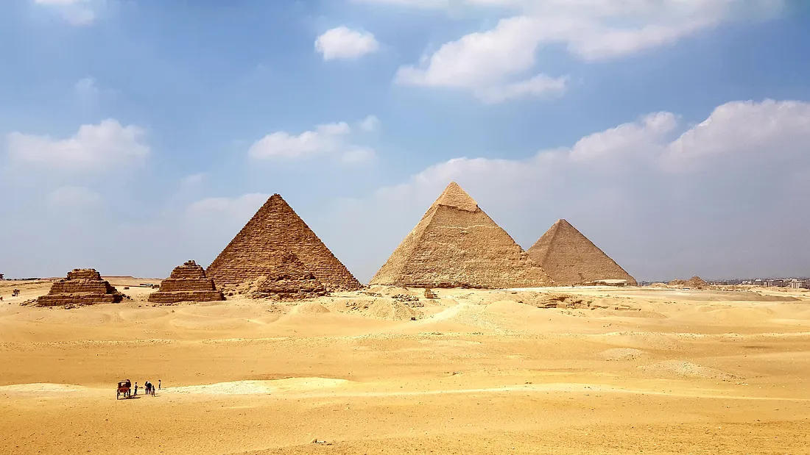

Şimdinin modern dünyasının belki de en önemli yapıtaşı internet olarak görünebilir çoğumuz için. Ama akıllı telefonumuz, bilgisayarımız veya tabletimiz olmadan internete bağlanma şansımız da yok maalesef. Bir de tüm bu cihazlar için en önemli etmenin elektrik olduğunu düşündüğümüzde, aslında bu modern dünyanın insanının her şeyi ile tamamen elektriğe bağımlı olduğu sonucuna kolayca varabiliriz.
Peki daha da derine inerek, eğer elektrik enerjisini üretebileceğimiz kaynakları düşünürsek, aslında bu kaynaklara bağımlıyız, diyebilir miyiz ? Bu soruya cevabınız evet ise, sizi bu serimiz ile birlikte, enerji üzerine düşünmeye, sorular sormaya ve daha da önemlisi özellikle enerji verimliliği konusunda bilinçli olmaya davet ediyorum.
Haydi, bugün hep birlikte sorular sormaya başlayalım!
Enerji neye deniyor ? Enerji ölçülebilen bir şey mi ? Enerji dönüşümü nasıl oluyor ? Yediğimiz yemekler de bize gerçekten enerji mi veriyor ? Kinetik enerji ve potansiyel enerji ne demek ? Elektrik enerjisi mi, o da ne ? Elektrik enerjisi, nasıl üretiliyor ? Yenilenebilir enerji kaynağı ne demek ? Petrol, doğalgaz gibi enerji kaynakları gerçekten tükeniyor mu ? Elektrik, duvarlardaki prizlere nasıl ulaştırılıyor ? Prizlerde gerçekten 220 Volt bir gerilim var mı ? Doğru akım ve alternatif akım arasındaki fark ne ? Elektrik çarpması ne demek ? Dünyada hala elektriğe erişimi olmayan yerler var mı ? Ampulü gerçekten Edison mu buldu ? Tesla kablosuz elektrik üretimini zaten zamanında bulmuş diyorlar, doğru mu ? Deprem, kasırga, tsunami gibi afetlerde çok büyük yıkımlar oluyor, buna da mı enerji sebep oluyor ? Enerji verimliliği ne demek ? Diş fırçalarken suyu kapatmak gerçekten enerji tasarrufu yapmamı sağlar mı ? Çöpleri ana kaynağında ayırmak da enerji tasarrufu sağlıyormuş, doğru mu ?

Bunlar ve bunun gibi daha yüzlerce sorunun hepsi bir şekilde enerji ile bağlantılı. Yeryüzünde çıkan sorunlar, savaşlar, çıkar çatışmaları yine bir şekilde hep enerji ve kaynakları ile ilgili ve aslında bu yalnızca şimdi karşılaştığımız bir mefhum değil. Bundan yaklaşık 5 bin yıl önce yapıldığı tahmin edilen Mısır piramitlerinin inşasında kullanılan devasa taşları kaldırmak için de insan ve çeşitli hayvanların güçlerinden faydalanıldığı biliniyor. Şimdi nasıl büyük ve ağır malzemeleri yerlerinden kaldırmak için petrol enerjisi tüketen iş makinaları kullanıyorsak, geçmişte de yine aynı mantıkla bir şekilde enerjiyi bir formdan başka bir forma aktaran aracılar kullanılmış. Yine aynı şekilde, ilk şehirler genelde hep nehir kenarlarında kurulmuş ve insanın en temel varlık ihtiyacı olan sudan faydalanılabilmiş. Zamanla bu suyun enerjisi fark edilip, su değirmenleri inşa edilmiş ve elde edilen hareket enerjisi çeşitli yerlerde kullanılarak bir şekilde teknolojinin gelişmesine katkı sağlanmış.
Arabamızın yakıt göstergesi alarm verdiğinde, istasyondan benzin depolarız, televizyonun kumandasının pili bitmeye başlayıp artık elimizle vurmak kâr etmediğinde yeni pil alıp değiştiririz, kendimizi çok yorgun ve bunalmış hissettiğimizde mesela Üsküdar-Eyüp vapuru gibi küçük bir kaçamak yapıp enerji depolarız. Tüm bunları beraber düşündüğümüzde, enerjinin kıymetini bir daha anlamış oluruz.
Bir şeylerin önemini onu kaybettiğimizde anlıyoruz çoğu zaman. Ancak kaybettiğimiz şeyleri her zaman geri getirmek mümkün olmayabiliyor. Yeryüzündeki kaynaklarımız sınırlı. Özellikle enerji verimliliği ile ilgili atmamız gereken onlarca adım var.
Haydi gelin, Enerji 101 serimizle beraber, bazı şeyleri elimizden tamamen kaçırmadan, harekete geçmenin yollarını arayalım. Değişikliğe önce kendimizden başlayıp, sorular sorup cevaplar arayıp, bir fark ortaya koyalım.
Medium Linki: Enerji 101: 1. Giriş